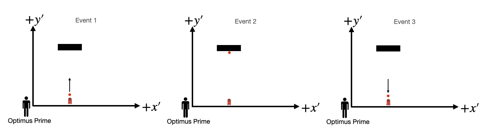
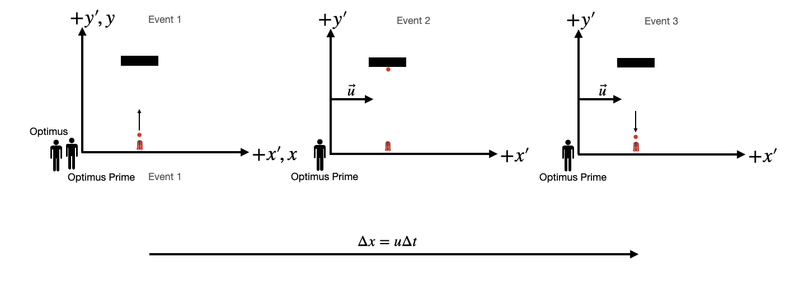
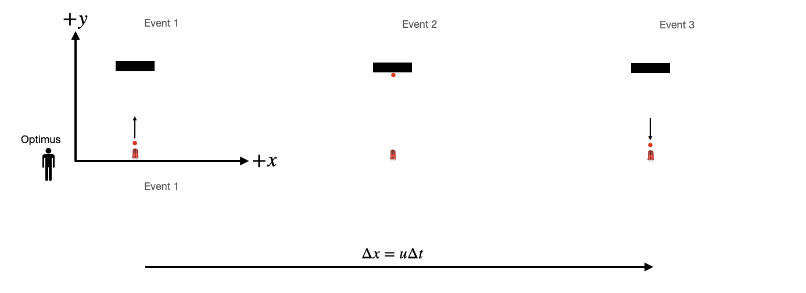
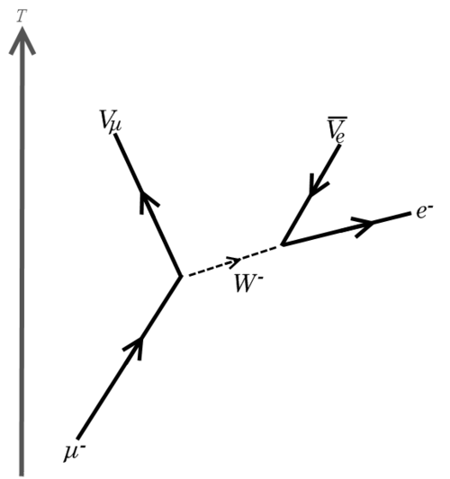

C6.2 Time Dilation#
C6.2.1 Prologue#
The time dilation based on special relativity is known as kinematic time dilation as it is a consequence of observers moving with respect to each other. The second form is gravitational time dilation, which is an effect of space-time curvature (or gravity) with clocks running slower in stronger gravitational fields. If you have watched the movie “Interstellar”, that is the effect happening on Miller’s planet as one hour on Miller’s planet is seven years on Earth due to the presence of stronger gravitational pull (or greater space-time curvature) from the black hole, Gargantua.
C6.2.2 Time Dilation Derived#
Now let us begin our endeavor into deriving the time dilation in baby steps. This approach is the most common approach in introductory physics courses.
Proper Time#
The concept of proper time is a difficult one grasp. We will later see in terms of world-lines how it becomes more clear. For now, we define the proper time as
The proper time for an observer or object, is the elapsed time measured with a clock following that observer or object.
When we talk about a proper time between events, we imply the measured time by a clock following the object subject to the events. I hope it becomes a little bit more clear as we work through the example below.
In the following, we make use of Langevin’s light clock, a thought experiment to geometrically derive the time dilation. Wikipedia has a nice Langevin Light Clock simulation here
{kind=link}
Consider Optimus Prime in Starship, an observer at rest at the origin of a reference frame \(S'\). As happens, a red light-emitting diode (LED) is placed on the floor with a mirror straight above it a distance \(d\) from the floor. A single light pulse is emitted (event 1), reflected at the mirror (event 2) and then detected by the LED (event 3).
Important: The proper time between the emission (event 1) and detection (event 3) is measured by a clock attached to the LED since the LED is both the emitter and the detector. The LED is fixed relative to Optimus Prime and he must therefore also measure the proper time \(\Delta t_0\).
From the definition of speed = (distance traveled)/(elapsed time), establish an equation for the proper time interval between events 1 and 2 as seen by Optimus Prime.
If the height of the train is \(d = 2.20\) m, what proper time interval does Optimus Prime observe between event 1 and event 2?
Show code cell source
%reset -f
print('dt0 = 2d/c')
c = 2.998e8
d = 2.20
dt0 = 2*d/c
print(' ')
print('Proper time measured by Optimus Prime: '+str(dt0)+' s')
Show code cell output
dt0 = 2d/c
Proper time measured by Optimus Prime: 1.4676450967311543e-08 s
Optimus is standing on the ground as he observes Optimus Prime passing by with a speed of \(u\). Optimus’s reference frame is \(S\). The instant that there origins overlap is when the LED emits its pulse of light.
Optimus also see events 1 and event 3 but, as argued in the concept of simultaneity, Optimus and Optimus Prime can not agree on when these events happened as we will show here.
Important: Since Optimus is NOT traveling with the LED he is not measuring the proper time between the events. Instead, Optimus measures an elapsed time \(\Delta t\).
Since we are focused on Optimus, let us remove Optimus Prime.
Show that the elapsed time interval for the light to travel the path observed by Optimus is
HINT: Form a triangle with sides \(d\), \(\frac{u\Delta t}{2}\) and \(l\), where \(l\) is the hypothenuse but also the apparent pathlength of the light as seen by Optimus. That path length must follow \(l = c\Delta t\). Combine it all and obtain the equation shown.
Take your results from Boxes 1 and 2 and solve for \(\Delta t\) to show that
HINT: square both sides of the equation from Box 2, isolate \(\Delta t\) and only consider the positive root. It is common to write \(\gamma = \frac{1}{\sqrt{ 1 - \frac{u^2}{c^2} }}\) to simplify the equation.
This result is known as the time dilation.
C6.2.3 Time Dilation#
Box 3 revealed the time dilation equation. Using the short notation for the radical, we have
If Optimus Prime is moving at \(u = 1.00\textrm{e}5\) m/s relative to Optimus, what time interval does Optimus observe between events 1 and 3?
How does the elapsed time for Optimus compare to the elapsed time by Optimus Prime?
# DIY Cell
Show code cell source
%reset -f
import numpy as np
c = 2.998e8
u = 1.00e5
d = 2.20
dt0 = 2*d/c
gamma = 1/np.sqrt(1 - (u**2/c**2))
dt = gamma*dt0
print('Optimus will observe the time interval to be: '+str(dt)+' s')
print(' ')
print('Optimus prime will observe the time interval to be: '+str(dt0)+' s')
print(' ')
print('Optimus observes a longer interval than Optimus Prime (not considering significant figures)')
Show code cell output
Optimus will observe the time interval to be: 1.467645178375823e-08 s
Optimus prime will observe the time interval to be: 1.4676450967311543e-08 s
Optimus observes a longer interval than Optimus Prime (not considering significant figures)
An Boeing 787 flies from San Francisco to Tokyo (\(8260.0\) km) at a ground speed of \(300.0\) m/s.
How long time elapses for a person standing on the ground?
Will a passenger on-board the plane measure a shorter or longer time interval?
How much shorter or longer is the time interval for the passenger on-board the plane? Give your answer to 4 significant figures.
# DIY Cell
Show code cell source
%reset -f
import numpy as np
import decimal
c = 2.998e8
d = 8260.0e3
u = 300.0
# Part 1
dt = (d/u)
dt = "{:.30e}".format(dt)
print('Elapsed time by ground-observer: '+dt+' s')
dt = decimal.Decimal(dt)
# Part 2
gamma = decimal.Decimal(1/np.sqrt(1 - (u**2/c**2)))
dt0 = dt/gamma
dt0 = "{:.30e}".format(dt0)
print(' ')
print('Elapsed time by on-board passenger: '+dt0+' s. It is shorter.')
dt0 = decimal.Decimal(dt0)
diff = dt - dt0
print('The flight is '+str(diff)+' s shorter.')
Show code cell output
Elapsed time by ground-observer: 2.753333333333333212067373096943e+04 s
Elapsed time by on-board passenger: 2.753333333331954588925802084000e+4 s. It is shorter.
The flight is 1.378623141571012943E-8 s shorter.
C6.2.4 Time Dilation Verified - The Hafele-Keating Experiment#
The time dilation between two observers, one on-board an aircraft and one on the ground was actually verified in 1971. The experiment is known as the Hafele-Keating Experiment and consisted of two atomic clocks: one on the ground and one on-board a commercial aircraft flying around the world twice.
Both kinematic and gravitational time dilations were observed during the Hafele-Keating experiment and agreed with predictions. A great victory for special and general relativity theories!
The experiment is detailed in two papers: Around-the-World Atomic Clocks: Predicted Relativistic Time Gains Around-the-World Atomic Clocks: Observed Relativistic Time Gains
High-energy subatomic particles (cosmic rays) coming from space interact with atoms in the earth’s atmosphere, in some cases producing unstable particles called muons. A muon has a mean life time of \(2.20~\mu\)s as measured in its own reference frame before decaying into other particles. If a muon is moving at \(0.990c\) (\(c = 2.9979\times 10^{8}\) m/s) relative to earth (laboratory frame), what will an observer on earth measure its lifetime to be?
 A Feynman diagram showing a $\mu^{-}$ muon decaying into a muon neutrino, an anti electron neutrino, and an electron through the weak interaction via an intermediate heavy $W^{-}$ boson. Cosmic rays and the atmosphere provides a natural environment to study particle physics.# DIY Cell
Show code cell source
%reset -f
import numpy as np
c = 2.9979e8
u = 0.990*c
dt0 = 2.20e-6
gamma = 1/np.sqrt(1 - (u**2/c**2))
dt = gamma*dt0
print('An observer on earth see a life time of '+str(dt)+' s')
Show code cell output
An observer on earth see a life time of 1.559538651018338e-05 s
For the muon in Box 6, what is the greatest distance the muon potentially could travel in its reference frame before decaying?
# DIY Cell
Show code cell source
%reset -f
import numpy as np
c = 2.9979e8
u = 0.990*c
dt0 = 2.20e-6
dx_prime = u*dt0
print('Distance traveled as observed by Muon: '+str(dx_prime)+' m')
Show code cell output
Distance traveled as observed by Muon: 652.94262 m
For the muon in Box 6, how far does the muon travel in the laboratory frame before decaying?
# DIY Cell
Show code cell source
%reset -f
import numpy as np
c = 2.9979e8
u = 0.990*c
dt0 = 2.20e-6
gamma = 1/np.sqrt(1 - (u**2/c**2))
dt = gamma*dt0
dx = u*dt
print('Distance traveled as observed from ground: '+str(dx)+' m')
Show code cell output
Distance traveled as observed from ground: 4628.587512668996 m